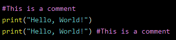

Comments are used to explain code and don't get executed at runtime.
Creating a Comment
Comments starts with a # for single line comment, and Python will ignore them

Multiline Comments
Python does not really have a syntax for multiline comments.
To add a multiline comment you could insert a # for each line

Or, not quite as intended, you can use a multiline string.
Since Python will ignore string literals that are not assigned to a variable, you can add a multiline string (triple quotes) in your code, and place your comment inside it(" " or ' ' both works)